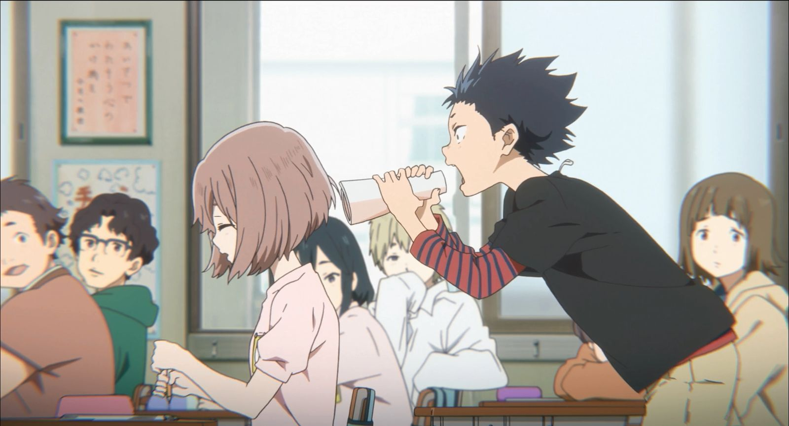
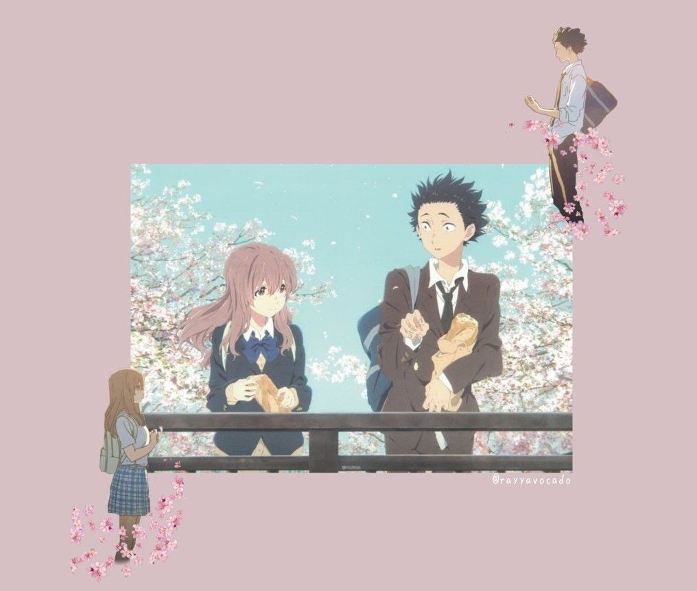

En resumidas cuentas y sin entrar en spoilers podemos decir que A Silent Voice narra la historia de Shoya, un chico de colegio que, junto con sus amigos, le hacen la vida imposible a Shoko, una niña sorda que acaba de llegar a la escuela. Años después Shoya, que atraviesa una depresión causada por el bullying que esta vez él está sufriendo, buscará a Shoko arrepentido de todo aquello en busca de su perdón.A Silent Voice es una película valiente que no tiene miedo en sumergirse en temas escabrosos para desarrollar una historia de superación y de amistad sin caer en el drama fácil ni en el sobado romance estudiantil al que tan acostumbrados nos tienen en este tipo de historias del género “slice of life” (costumbrismo de toda la vida, vaya). Los protagonistas, Shoya y Shoko, están lejos de los clichés tópicos de la animación japonesa, siendo estos verdaderamente profundos y ganando en complejidad y matices junto a una trama que empuja a todo el elenco de personajes, principales y secundarios, a crecer y a madurar a medida que se va desarrollando. Así, la historia de Shoya y Shoko se va complementando con pequeños arcos argumentales que giran en torno a sus familias y a sus compañeros de clase, pequeñas subtramas que hablan de soledad, de superación, de éxito y también de fracaso. En última instancia A Silent Voice sabe darnos una conclusión que, si bien para muchos no es la que cabría esperar (en esto también sorprende), realmente es la necesaria, la que convierte a este film en algo más que la típica historia de chico conoce a chica.
Si por algo destaca A Silent Voice es por lo maravillosamente bien desarrollados que están sus personajes, por cómo sabe transmitir, a través de la imagen y de su increíble estilo artístico, muchas emociones que el guion omite deliberadamente con la férrea convicción de que las imágenes hablarán por sí solas, y vaya si lo hacen. La expresividad de sus personajes y esa composición escénica tan propia de Japón, que habla sin decir nada y que es parte inherente del anime, ayudan a darle a las escenas más importantes una carga dramática con un estilo tan personal como indiscutiblemente eficaz. Quizá su productora, Kyoto Animation, no haya logrado llegar a la calidad técnica tan sublime de Your Name, pero sin duda se ha quedado muy cerca. Y es que A Silent Voice no exige, por el tipo de historia que es, de grandes despliegues técnicos, ni de secuencias de acción, en las que la animación japonesa sabe brillar como ninguna otra. Pero aún así, su buen diseño de personajes, sus trabajadísimos fondos, su acertada gama cromática y su fluida animación consiguen una nota global sobresaliente. Es, posiblemente, el empuje sonoro lo que le falta a A Silent Voice para terminar de ser una película redonda en lo técnico. Nos encontramos con una producción bastante plana, abusando de melodías rebobinadas y de notas perdidas que a veces no terminan de casar con el contexto y, aunque no desentonan, se echa de menos un gran tema central que acabe de darle fuerza a determinadas escenas. Al final, A Silent Voice funciona a las mil maravillas como largometraje y, aunque es posible que se deje algo en el tintero con respecto al manga original, si entendemos la película como un producto independiente de éste podemos decir que ha quedado una obra de sobresaliente. Una cinta entretenida, con un gran mensaje, unos personajes interesantes y, sobre todo, algo que contar. A todo el mundo este año se le llena la boca al hablar de Coco (no me malinterpretéis, es una gran película) mientras tanto, grandes joyas de la animación como esta, A Silent Voice, quedan relegadas al disfrute de un puñado de fans conocedores del mundillo, joyas ocultas que rara vez pisan las alfombras rojas, pero que podrían mirar de tú a tú a las mejores producciones occidentales. A Silent Voice es un film que merece un visionado por todo aquel que sencillamente ame el cine, una película que tiene mucho que ofrecer, y más en occidente, donde todavía existe la absurda convicción de que los “dibujos” son para niños.
